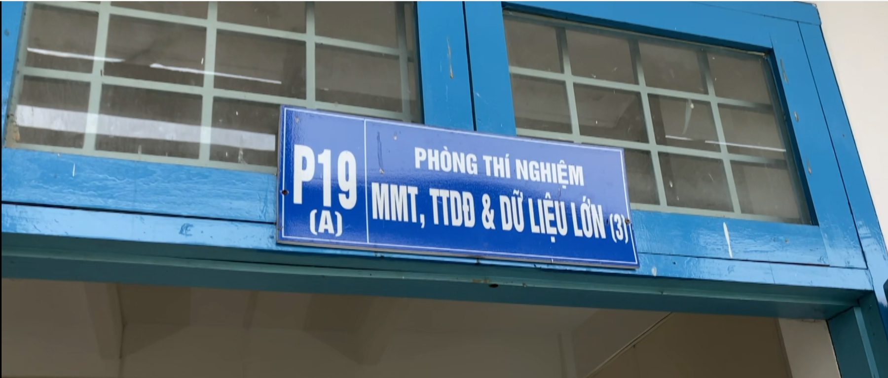
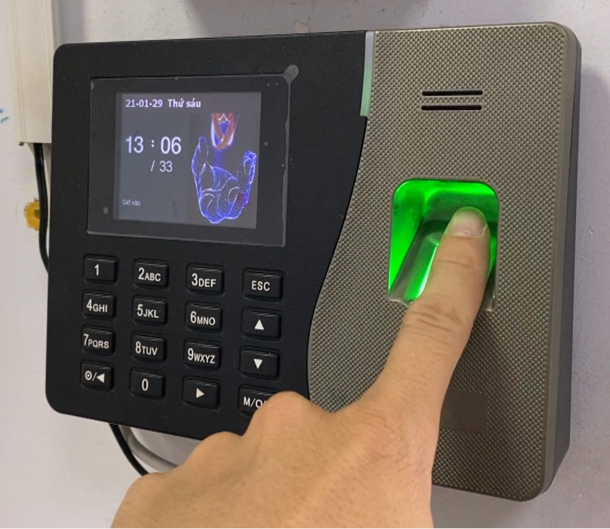
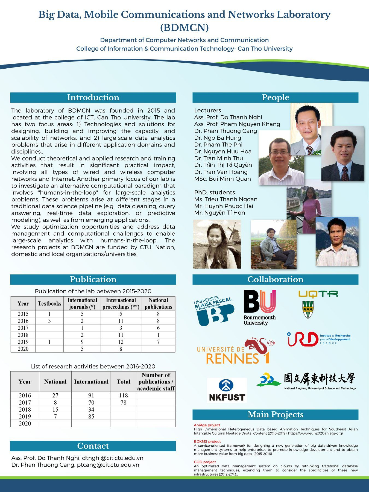

PTN Mạng máy tính, Truyền thông di động & Dữ liệu lớn
Trưởng phòng thí nghiệm: PGS. TS. GVCC. Đỗ Thanh Nghị


Định hướng phát triển
Định hướng phát triển của Phòng TN MMT, TTDĐ & DLL tập trung trên ba lĩnh vực chính: Mạng máy tính, Tính toán hiệu năng cao và Khoa học dữ liệu.
Trường CNTT & TT đã đầu tư nghiêm túc cả về cơ sở vật chất và đội ngũ nghiên cứu. Tương xứng với sự đầu tư đó, Phòng TN đã cống hiến nhiều bài báo khoa học quốc tế có uy tín xếp hạng ISI, các dự án, học bổng và đặc biệt là cải tiến công tác đào tạo để có thể tiếp cận được với định hướng nghiên cứu và công nghệ mới.


Hạ tầng điện toán đám mây
Phòng TN đã triển khai thành công Đám mây riêng cho Trường CNTT & TT (cloud.cit.ctu.edu.vn/horizon), mang lại nhiều lợi ích cho công tác đào tạo của Trường CNTT & TT và Đại học Cần Thơ.
Điện toán đám mây là giải pháp công nghệ thông tin toàn diện, trong đó sử dụng các công nghệ máy tính với máy chủ, phát triển theo mạng Internet. Điện toán đám mây tạo ra một môi trường làm việc ảo giúp các tổ chức hiện thực hoá việc cung cấp tài nguyên linh hoạt, giảm đáng kể chi phí đầu tư và bảo trì cũng như điện năng tiêu thụ.
Đăng ký sử dụng máy ảo trên CitCloud
CitCloud gồm 06 máy chủ cấu hình cao do Khoa vận hành, cung cấp máy ảo Ubuntu Server phục vụ thực hành, nghiên cứu và các dự án chuyên ngành. Máy ảo chạy Windows chỉ được cấp khi người dùng cung cấp bản quyền phần mềm. Thứ tự ưu tiên cấp phát: hỗ trợ giảng dạy (ví dụ máy chủ thực hành lập trình web, lập trình mạng), nghiên cứu khoa học, dự án của Trường, đề tài và dự án chuyển giao công nghệ.
- Đăng kýĐiền mẫu đăng ký: họ tên, email, đơn vị, mục đích, thời gian sử dụng, cấu hình (CPU, RAM, ổ đĩa) và số máy.
- Tiếp nhậnTrợ lý phòng thí nghiệm kiểm tra khả năng đáp ứng của hệ thống.
- DuyệtTrưởng phòng thí nghiệm hoặc lãnh đạo Khoa xác nhận yêu cầu.
- Cấp máyNgười dùng nhận địa chỉ IP và tài khoản, kết nối bằng SSH (Linux) hoặc PuTTY (Windows); kết quả cấp phát được công khai.
- Dùng máy ảo đúng mục đích đã đăng ký; đổi mật khẩu ngay khi nhận máy và tự chịu trách nhiệm về bảo mật, bản quyền phần mềm.
- CitCloud chỉ cung cấp tài nguyên tính toán trong thời gian đăng ký, không lưu trữ dữ liệu lâu dài.
- Mở dịch vụ ra Internet phải được Ban lãnh đạo Trường CNTT&TT cho phép.
Đăng ký sử dụng Hướng dẫn đăng ký và kết nối Trang CitCloud — kết quả đăng ký
Liên hệ: ThS. Bùi Minh Quân, bmquan@cit.ctu.edu.vn.
Hợp tác nghiên cứu
Phòng TN đã có một số dự án hợp tác trong và ngoài nước như tỉnh An Giang, TP. Cần Thơ, tỉnh Tiền Giang, Đại học Blaise Pascal (Pháp), Đại học Québec (Canada), Đại học Rennes 1 (Pháp)… Phòng TN cũng góp phần tạo điều kiện giới thiệu học bổng Tiến sĩ và Thạc sĩ đến giảng viên, sinh viên.
